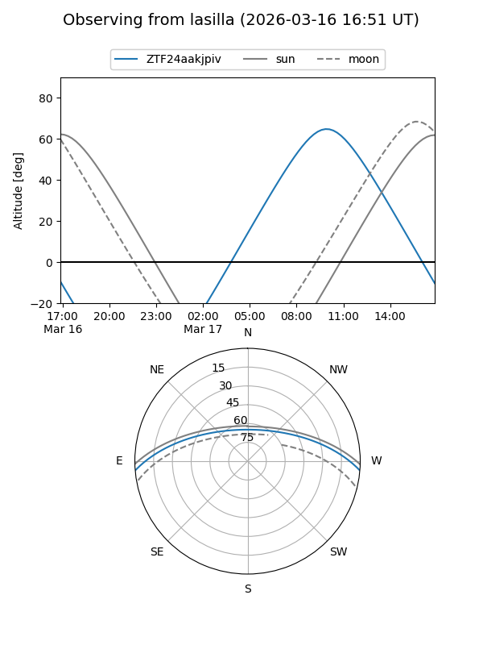
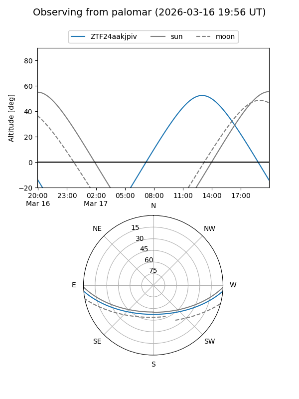

ZTF24aakjpiv
Target ZTF24aakjpiv at 2026-03-16 14:00
Aliases and brokers:
FINK: link
Lasair: link
ALeRCE: link
alt names
ZTF24aakjpiv (ztf,fink_ztf)
Coordinates:
equatorial (ra, dec) = 252.8306,-4.05364
equatorial (HMS+DMS) = 16:51:19.35,-04:03:13.12
galactic (l, b) = (14.3380,+24.33267)
Flags:
Photometry:
last ztfg=17.03
1 ztfg detections
Lightcurve
Visibility


Additional plots